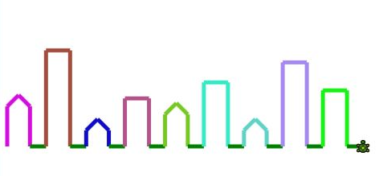

Houses

Goal:
Have the Robot draw a row of houses. Practice writing and calling methods that take parameters.
Steps:
- Move the robot to the left side of the window near the bottom.
- Draw ONE flat-topped house with height=100 and green grass after it (see picture).
- Put the code that drew the house into a method called drawHouse (HINT: Only the code that draws one house should go in this method.
-
Using the method you just created, draw 10 houses. HINT: Use a for loop.
Run the code to make sure it works before proceeding. - Now change the drawHouse method to take (int height) as its parameter.
- Use random numbers to draw 9 houses of different heights.
Run the code to make sure it works before proceeding. - Make another drawHouse method that takes (String height) as a parameter and make it call the above method with an int according to the following rules:
“small” = 60
“medium” = 120
“large” = 250 - Make two new methods that draw different shaped roofs (JUST the roof part):
drawPointyRoof
drawFlatRoof - By calling the correct "roof" method, make large houses have flat roofs and all the others have pointy roofs .
- [optional] Set the scene to night by setting the background to black